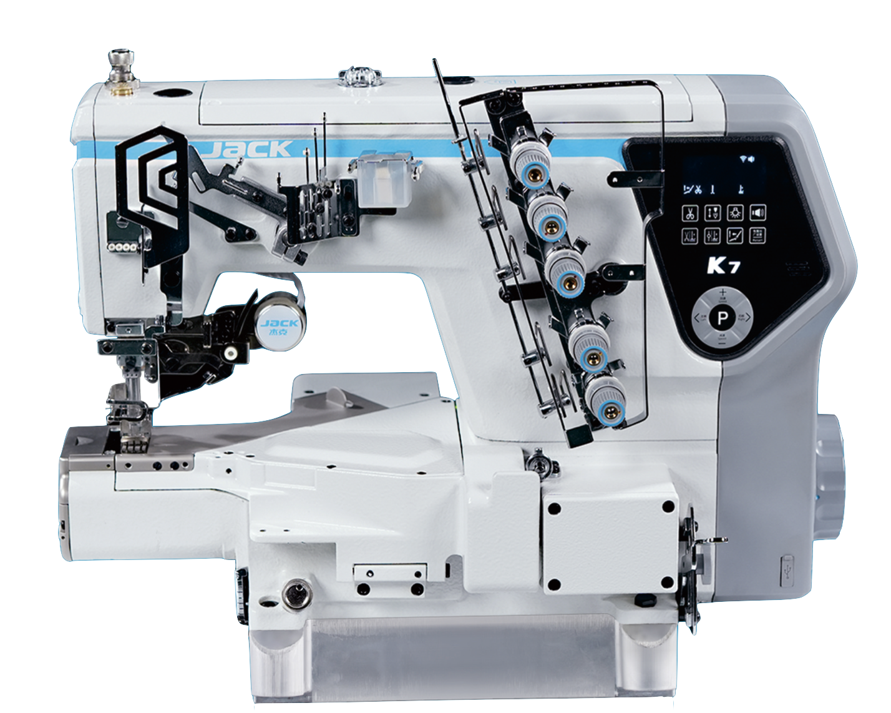
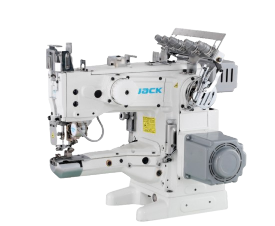
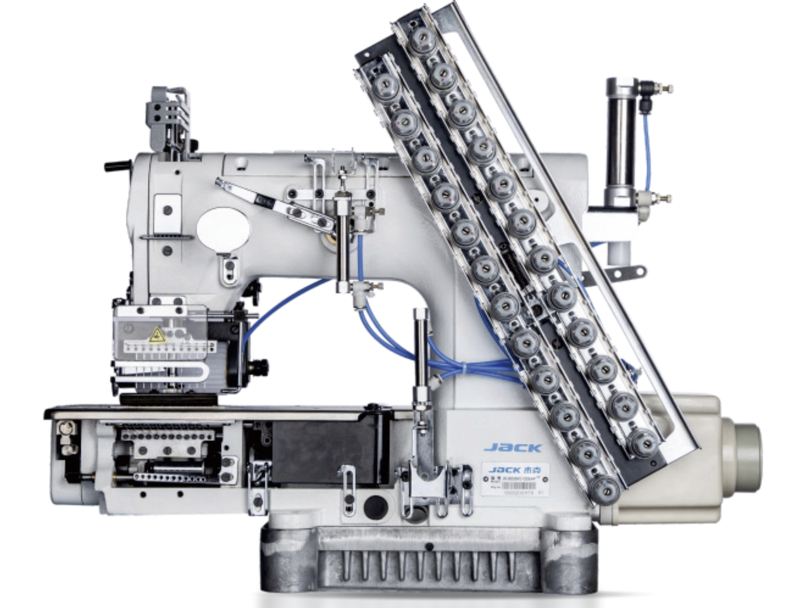
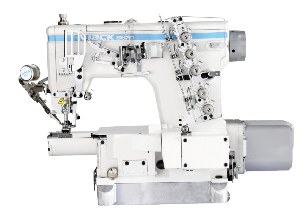
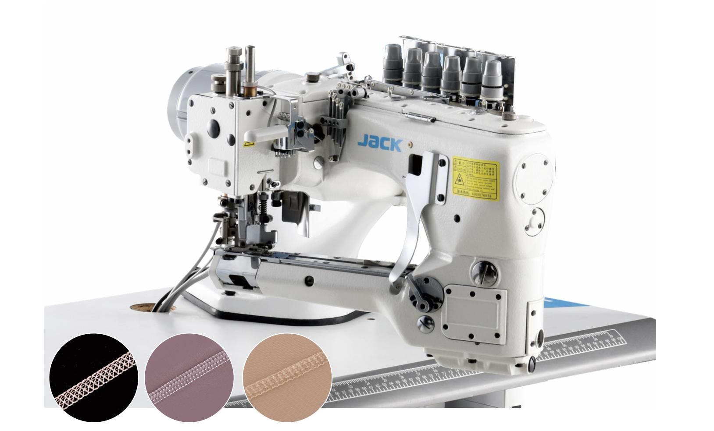
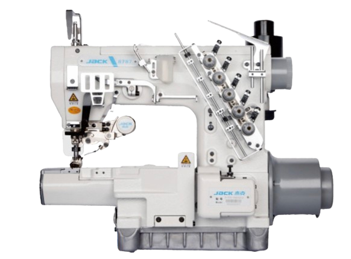
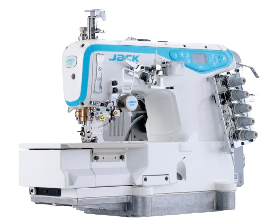

Every fabric.
One smooth feed.
Seven interlock machines, led by the AI-driven K7, built to carry hems, waistbands and cover seams across thick, thin, elastic and slippery fabrics without ever slowing the line down.
Full speed,
across the full range of fabric.
K7's AI Full-Speed Feeding System senses fabric thickness changes in real time, letting Smart Rhino fabric feeding and 0-degree thread technology work together so the machine keeps sewing at full speed through thick, thin, elastic or slippery material and every change in between.
- Smart Rhino fabric feeding: 9.2Nm torque, precise control at every 1° interval
- 0-degree thread technology: 30% less thread path resistance, 80% better loop stability
- Comprehensive per-unit efficiency improved by 11%+
- Configurable for plain seaming, hem folding and elastic attaching

Six more feeds, dialed in.
From feed-up-the-arm cylinder beds to multi-needle waistbanding and curved-arm jointing, each machine below covers a specific stage of garment assembly.

High-speed, feed-up-the-arm cylinder-bed interlock with auto trimmer and auto foot lifter, built for hemming, strip attaching and joint seaming in one head.
View spec sheet
High-speed computerized multi-needle machine for elastic attaching, shirt fronting, tape attaching and waistbands, with auto presser-foot lift and auto trimming.
View spec sheet
Small cylinder-bed computerized interlock for baby-cuff sewing, with 180mm gesture-free operation and CAM anti-winding for smooth, even stitching.
View spec sheet
Four-needle, six-thread jointing machine with a curved arm and fragment-type presser foot, built for sportswear, swimwear and wetsuit seams.
View spec sheet
Small square-head computer sewing machine with an improved bottom-line crossing group and electromagnetic direct-drive presser-foot lift.
View spec sheet
Stepping flatbed high-speed interlock with presser lift raised to 7mm for a stronger cross-thick ability, tuned for knitted fabrics, mesh, lace and intimate apparel.
View spec sheet